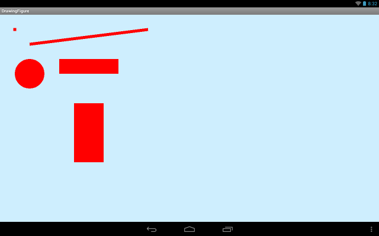
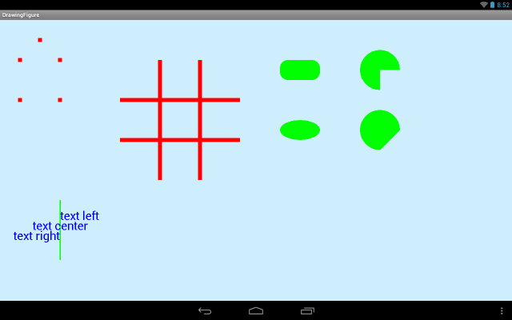
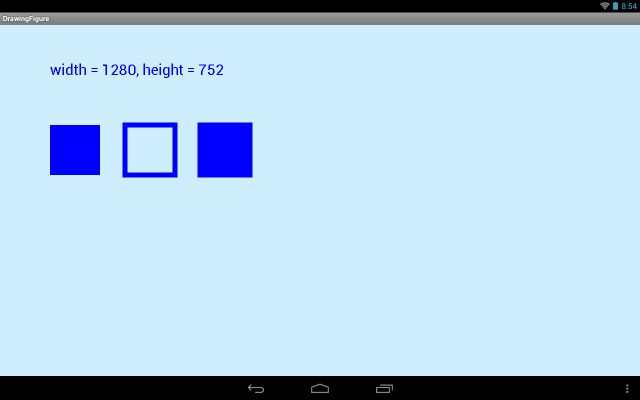

В этом уроке:
- рисуем фигуры
- выводим текст
На прошлом уроке разобрались, как достучаться до канвы. Теперь попробуем поработать с ней, рассмотрим методы рисования точки, линии, круга, дуги, овала, прямоугольника и текста.
Для рисования используются методы draw*. Если посмотреть их в документацие можно обратить внимание, что одним из их параметров является объект Paint. В этом объекте задаются графические характеристики рисования. Т.е. можно считать, что это кисть, которой будут рисоваться ваши фигуры. Через него вы сообщаете канве цвет и толщину линии для рисования.
Создадим проект:
Project name: P1421_DrawingFigure
Build Target: Android 4.0
Application name: DrawingFigure
Package name: ru.startandroid.develop.p1421drawingfigure
Create Activity: MainActivity
Пишем MainActivity.java:
package ru.startandroid.develop.p1421drawingfigure;
import android.app.Activity;
import android.content.Context;
import android.graphics.Canvas;
import android.graphics.Color;
import android.graphics.Paint;
import android.graphics.Rect;
import android.os.Bundle;
import android.view.View;
public class MainActivity extends Activity {
@Override
protected void onCreate(Bundle savedInstanceState) {
super.onCreate(savedInstanceState);
setContentView(new DrawView(this));
}
class DrawView extends View {
Paint p;
Rect rect;
public DrawView(Context context) {
super(context);
p = new Paint();
rect = new Rect();
}
@Override
protected void onDraw(Canvas canvas) {
// заливка канвы цветом
canvas.drawARGB(80, 102, 204, 255);
// настройка кисти
// красный цвет
p.setColor(Color.RED);
// толщина линии = 10
p.setStrokeWidth(10);
// рисуем точку (50,50)
canvas.drawPoint(50, 50, p);
// рисуем линию от (100,100) до (500,50)
canvas.drawLine(100,100,500,50,p);
// рисуем круг с центром в (100,200), радиус = 50
canvas.drawCircle(100, 200, 50, p);
// рисуем прямоугольник
// левая верхняя точка (200,150), нижняя правая (400,200)
canvas.drawRect(200, 150, 400, 200, p);
// настройка объекта Rect
// левая верхняя точка (250,300), нижняя правая (350,500)
rect.set(250, 300, 350, 500);
// рисуем прямоугольник из объекта rect
canvas.drawRect(rect, p);
}
}
}Смотрим класс DrawView. В конструкторе создаем объект Paint, которым будем рисовать фигуры, и объект Rect, который нам понадобится для рисования прямоугольника. Тут сразу обращу внимание, что создавать объекты крайне желательно за пределами метода onDraw, т.к. при частой прорисовке у вас постоянно будут создаваться новые объекты, а это является лишней нагрузкой на сборщик мусора и может замедлить работу приложения. Поэтому создаем мы объекты всего один раз, в конструкторе.
В методе onDraw мы сначала закрашиваем всю канву цветом. Есть различные реализации метода закраски:
drawRGB – на вход требует три компонента RGB (red, green, blue: смешением этих трех цветов можно получать другие цвета и их оттенки).
drawARGB – аналогичен drawRGB, но добавляет использование прозрачности (alpha). alpha + RGB = ARGB.
drawColor – на вход требует ARGB-значение в десятичной системе. Для удобства в классе Color есть несколько констант-цветов. Одну из них (Color.GREEN) мы использовали с этим методом на прошлом уроке.
Если хотите посмотреть, как выглядят различные RGB комбинации, просто напишите в Интернете фразу: «таблица цветов».
Мы в нашем приложении используем метод drawARGB и передаем ему значения: прозрачность (80), уровень красного (102), уровень зеленого (204), уровень синего (255). В итоге получаем канву, закрашенную вполне себе приятным для глаз цветом.
Далее настраиваем нашу кисть, она же Paint. Напомню, что эти настройки будут применены к рисованию фигур.
Метод setColor позволяет указать цвет (аналогично методу drawColor у канвы). Кроме этого, у Paint есть метод для указания ARGB – setARGB.
Метод setStrokeWidth позволяет указать толщину линий при рисовании. Мы укажем 10.
Начинаем рисовать объекты.
drawPoint – нарисует точку с координатами (50,50)
drawLine – нарисует линию из точки (100,100) в точку (500,50)
drawCircle – нарисует круг в точке (100,200) с радиусом 50
drawRect – нарисует прямоугольник с левым верхним углом в точке (200,150) и нижним правым углом в точке (400,200)
Далее идет другая реализация метода drawRect. Он принимает на вход объект Rect, в котором ранее были указаны координаты прямоугольника методом set. В итоге метод нарисует нам прямоугольник с верхним левым углом в точке (250,300) и нижним правым в точке (350,500).
Также есть реализация drawRect, которая на вход требует объект RectF – это аналог Rect, но значения используются не int, а float.
И, как вы наверно заметили, все эти draw* методы требуют на вход объект Paint. Это логично, т.к. канва должна знать толщину и цвет линий, которыми мы собрались рисовать.
Все сохраняем и запускаем приложение.
Видим такую картину:

Нулевая точка координат расположена в левом верхнем углу экрана и от нее идет отсчет вправо по оси X и вниз по оси Y. Видим нарисованные нами точку, линию, круг и два прямоугольника.
С этим все понятно. Давайте посмотрим другие методы рисования и будем менять некоторые используемые объекты в процессе.
Перепишем класс DrawView:
class DrawView extends View {
Paint p;
RectF rectf;
float[] points;
float[] points1;
public DrawView(Context context) {
super(context);
p = new Paint();
rectf = new RectF(700,100,800,150);
points = new float[]{100,50,150,100,150,200,50,200,50,100};
points1 = new float[]{300,200,600,200,300,300,600,300,400,100,400,400,500,100,500,400};
}
@Override
protected void onDraw(Canvas canvas) {
canvas.drawARGB(80, 102, 204, 255);
p.setColor(Color.RED);
p.setStrokeWidth(10);
// рисуем точки их массива points
canvas.drawPoints(points,p);
// рисуем линии по точкам из массива points1
canvas.drawLines(points1,p);
// перенастраиваем кисть на зеленый цвет
p.setColor(Color.GREEN);
// рисуем закругленный прямоугольник по координатам из rectf
// радиусы закругления = 20
canvas.drawRoundRect(rectf, 20, 20, p);
// смещаем коорднаты rectf на 150 вниз
rectf.offset(0, 150);
// рисуем овал внутри прямоугольника rectf
canvas.drawOval(rectf, p);
// смещаем rectf в (900,100) (левая верхняя точка)
rectf.offsetTo(900, 100);
// увеличиваем rectf по вертикали на 25 вниз и вверх
rectf.inset(0, -25);
// рисуем дугу внутри прямоугольника rectf
// с началом в 90, и длиной 270
// соединение крайних точек через центр
canvas.drawArc(rectf, 90, 270, true, p);
// смещаем коорднаты rectf на 150 вниз
rectf.offset(0, 150);
// рисуем дугу внутри прямоугольника rectf
// с началом в 90, и длиной 270
// соединение крайних точек напрямую
canvas.drawArc(rectf, 90, 270, false, p);
// перенастраиваем кисть на толщину линии = 3
p.setStrokeWidth(3);
// рисуем линию (150,450) - (150,600)
canvas.drawLine(150, 450, 150, 600, p);
// перенастраиваем кисть на синий цвет
p.setColor(Color.BLUE);
// настраиваем размер текста = 30
p.setTextSize(30);
// рисуем текст в точке (150,500)
canvas.drawText("text left", 150, 500, p);
// настраиваем выравнивание текста на центр
p.setTextAlign(Paint.Align.CENTER);
// рисуем текст в точке (150,525)
canvas.drawText("text center", 150, 525, p);
// настраиваем выравнивание текста на левое
p.setTextAlign(Paint.Align.RIGHT);
// рисуем текст в точке (150,550)
canvas.drawText("text right", 150, 550, p);
}
}Предлагаю вам сразу запустить приложение и посмотреть результат, так мои пояснения будут проще восприниматься.

Смотрим метод onDraw. Первые три строки не менялись, повторяться не буду.
drawPoints – рисует множество точек. Их координаты заданы в виде float массива следующим образом {x1,y1,x2,y2, …}. Соответственно, будут нарисованы точки (x1,y1), (x2,y2), … В нашем примере мы используем массив points.
Есть также следующая реализация этого метода: drawPoints (float[] pts, int offset, int count, Paint paint). Она позволяет указать с какого (offset) по порядку значения в массиве начинать формировать точки и сколько (count) значений брать. Тут не запутайтесь, идет выборка именно значений массива, а не получившихся точек.
drawLines – рисует множество линий. Их координаты заданы в виде float массива следующим образом {x1,y1,x2,y2,x3,y3,x4,y4, …}. Соответственно будут нарисованы линии (x1,y1)-(x2,y2), (x3,y3)-(x4,y4), … В нашем примере используем массив points1.
Аналогично точкам, у этого метода также есть реализация с отступом и количеством: drawLines (float[] pts, int offset, int count, Paint paint), где offset – это отступ, указывающий с какого значения массива брать значения для формирования точек, а count – количество значений, которое необходимо взять.
Методом setColor сменим для разнообразия цвет кисти на зеленый. Тут важно понимать, что все ранее нарисованные объекты останутся красными. А вот последующие будут нарисованы уже зеленым цветом.
drawRoundRect рисует обычный прямоугольник, но со скругленными углами. В объекте rectf мы передаем данные по расположению прямоугольника. Далее два числовых параметра позволяют нам задать радиус скругления по оси X и Y. Тут не смогу объяснить словами про эти радиусы, просто позадавайте различные значения и посмотрите на результат. Чем выше значения, тем более закруглены углы.
Далее методом offset выполняем смещение в объекте rectf. На вход передаем смещение по оси X (0) и по оси Y (150). Т.е. был RectF со значениями (700,100,800,150), а стал (700 + 0, 100 + 150, 800 + 0, 150 + 150). Т.е. просто опускаем прямоугольник вниз на 150.
Эта процедура никак не влияет на фигуры, которые уже были нарисованы с использованием этого RectF объекта. Они где были, там и остаются.
drawOval рисует овал, который занимает все пространство в переданном ему прямоугольнике (rectf).
Далее снова меняем координаты объекта rectf, только на этот раз методом offsetTo. Он не добавляет координаты к имеющимся, а устанавливает новую верхнюю левую точку прямоугольника. И прямоугольник смещается к ней, сохраняя при этом свои размеры.
Далее меняем размер прямоугольника rectf методом inset. На вход метод принимает две дельты, на которые он уменьшит прямоугольник по горизонтали (0) и вертикали (-25). Уменьшит на -25 означает, увеличение на 25.
Причем, изменения размера происходят с обоих сторон. Т.е. если меняем размер горизонтально (первый параметр метода): левая и правая сторона приближаются к центру на указанное значение дельты, если дельта положительная и отдаляются от центра, если дельта отрицательная. По вертикали (второй параметр метода) – аналогично относительно центра ведут себя верхняя и нижняя стороны.
Выполнив rectf.inset(0, -25) я увеличиваю размер прямоугольника rectf по вертикали на 25 и вверх и вниз. Итого, размер по вертикали увеличивается на 50. Горизонтальный не меняется.
drawArc – рисует дугу (или можно еще сказать - часть круга), которая занимает предоставленный ей прямоугольник rectf. Далее идут два угловых параметра: начало и длина, в нашем случае это 90 и 270 градусов.
Начало – угол, с которого дуга начинает рисоваться. Отсчет ведется по часовой стрелке от точки «3 часа», если рассматривать часовой циферблат. Т.е. если от трех часов отложить угол 90 градусов, получится шесть часов. С этой точки и начнется рисоваться дуга.
Длина – это угол рисуемой дуги. Т.е. полный круг – это 360 градусов. Соответственно 270 – три четверти круга. Если мы отложим три четверти круга от 6 часов, то получим 3 часа. Такая дуга и должна получится: от шести до трех часов по часовой стрелке.
Следующий boolean параметр определяет, как будут соединены две крайние точки дуги. Т.е. если рассматривать наш пример, то это точки 6 и 3 часа. Между ними по часовой проходит дуга, но чтобы получилась замкнутая фигура, необходимо соединить между собой эти точки. Тут два варианта: от каждой точки будет проведена прямая к центру круга и в итоге через центр дуга замкнется, либо просто проводится прямая между этими точками. Соответственно если параметр true – то точки соединяются через центр, если false – то между собой. В нашем случае – это true.
Далее опускаем прямоугольник на 150 вниз. И снова рисуем такую же дугу, но теперь с параметром false. Концы дуги будут соединены между собой напрямую.
Далее устанавливаем ширину линии в 3 px. И рисуем вертикальную линию с X = 150. Она понадобится, чтобы показать выравнивание текста, который сейчас будем выводить.
Меняем цвет кисти на синий.
Методом setTextSize устанавливаем размер шрифта в 30. Т.е. данные шрифта для текста задаются в той же самой кисти, которой мы только что фигуры рисовали.
drawText рисует текст: «text left». С параметрами все просто: сам текст и координаты X и Y. Также существует несколько аналогов drawText, которые позволяют выводить не весь текст, а его часть.
Метод setTextAlign настраивает горизонтальное выравнивание текста. По умолчанию оно равно Paint.Align.LEFT. И с ним у нас вывелся первый текст. Причем текст вывелся справа. Т.е. в данном случае LEFT означает не "текст будет слева от точки", а "точка будет слева от текста". Вполне можно и запутаться.
Меняем выравнивание на Paint.Align.CENTER. Теперь выравнивание по центру. Рисуем текст «text center».
Далее снова меняем выравнивание на Paint.Align.RIGHT и рисуем текст «text right».
Мы нарисовали три текста указывая одну X-координату = 150. Но разное горизонтальное выравнивание раскидало их по разные стороны. Ранее нарисованная зеленая линия с X = 150 позволяет это четко увидеть.
И напоследок рассмотрим еще пару моментов.
Перепишем класс DrawView:
class DrawView extends View {
Paint p;
Rect rect;
StringBuilder sb;
public DrawView(Context context) {
super(context);
p = new Paint();
rect = new Rect(100,200,200,300);
sb = new StringBuilder();
}
@Override
protected void onDraw(Canvas canvas) {
canvas.drawARGB(80, 102, 204, 255);
p.setColor(Color.BLUE);
p.setStrokeWidth(10);
p.setTextSize(30);
// создаем строку с значениями ширины и высоты канвы
sb.setLength(0);
sb.append("width = ").append(canvas.getWidth())
.append(", height = ").append(canvas.getHeight());
canvas.drawText(sb.toString(), 100, 100, p);
// перенастраивам кисть на заливку
p.setStyle(Paint.Style.FILL);
canvas.drawRect(rect, p);
// перенастраивам кисть на контуры
p.setStyle(Paint.Style.STROKE);
rect.offset(150, 0);
canvas.drawRect(rect, p);
// перенастраивам кисть на заливку + контуры
p.setStyle(Paint.Style.FILL_AND_STROKE);
rect.offset(150, 0);
canvas.drawRect(rect, p);
}
}Получится такая картинка

Методы getWidth и getHeight позволяют получить ширину и высоту канвы. Мы выводим эту инфу на экран методом darwText.
Далее выводим три прямоугольника с разными стилями рисования, которые указываем методом setStyle:
Paint.Style.FILL – прямоугольник закрашивается изнутри, а его грани не рисуются
Paint.Style.STROKE – рисуются только грани прямоугольника, внутри закраски нет
Paint.Style.FILL_AND_STROKE – есть и закраска внутри и грани
По умолчанию используется стиль Paint.Style.FILL.
Чтобы лучше понять все вышеизложенные аспекты, советую вам самостоятельно поэкспериментировать с ними.